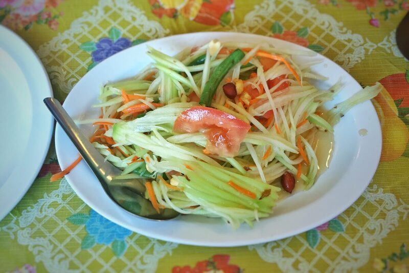

Appetizers
Som Tam (Thai Green Papaya Salad)
Shredded unripe papaya pounded with chilies, lime, and fish sauce in a mortar and pestle.
Gluten-Free
Dairy-Free
Egg-Free

Julienned green (unripe) papaya bruised and pounded together with garlic, chilies, lime juice, palm sugar, and fish sauce in a clay mortar -- the pounding, not just tossing, is what makes real som tam, and it's meant to hit sour and salty first, with sweetness only in the background.
Ingredients
For the salad
- 3 cloves garlic
- 3 Thai bird's eye chilies, adjust to taste
- 100 g long beans, or green beans, cut into short lengths
- 300 g green (unripe) papaya, peeled and julienned
- 2 tbsp dried shrimp, optional, traditional
- 10 cherry tomatoes, halved
For the dressing
- 2 tbsp palm sugar
- 2 tbsp fish sauce
- 2 1/2 tbsp fresh lime juice
To finish
- 2 tbsp roasted peanuts, roughly crushed
- lettuce leaves, to serve
Instructions
-
Pounding rather than tossing is what actually defines som tam -- it bruises the papaya just enough to let it take on the dressing, while a plain toss leaves it crunchy but flavorless.
Notes
- Real som tam is aggressively sour and salty first, with sweetness only in the background -- if it tastes like a sweet slaw, the balance is off.
- A wooden or clay mortar is traditional, but the technique -- bruising, not mincing -- matters more than the vessel.
- Green papaya has almost no flavor of its own; it's a crunchy vehicle for the dressing, similar in role to a cucumber.
Nutrition Facts
| Nutrient | Amount |
|---|---|
| Calories | 140 kcal |
| Total Fat | 5 g |
| Saturated Fat | 1 g |
| Carbohydrates | 20 g |
| Fiber | 4 g |
| Sugar | 12 g |
| Protein | 5 g |
| Sodium | 780 mg |
| Cholesterol | 5 mg |
| Values are estimates based on standard ingredient data, not laboratory analysis. | |
Photo: T.Tseng, CC BY 2.0. Cropped to 3:2 and re-encoded as WebP/JPEG for web delivery.
{kind=link}